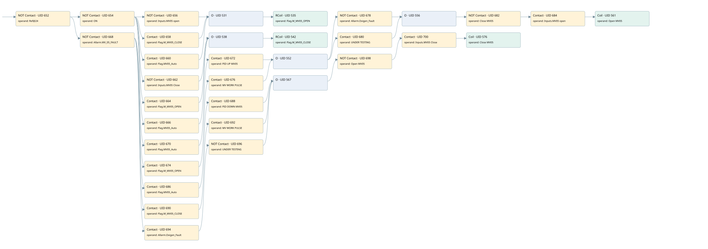

mv05 controlled by ro-01
valve control loop · 검색 색인 순서 7 · 원본 내부 NID 추정 6
백업 PLF 원본의 2919662 바이트 위치에서 복원한 XML. 검색 문서 1708의 객체 키 161022007a12000000000000와 연결했다. 이름 해석 28/29개. 남은 RefId는 상수 또는 미해석 참조다.
연결 구조 다시 그리기
원본 Part/PCon/Wire를 이용한 연결도다. TIA 화면의 래더 배치 또는 실행 결과를 재현한 그림은 아니다. 핀 연결은 아래 표와 원본 XML을 기준으로 읽는다. 노드 위에 마우스를 두면 피연산자 이름을 볼 수 있다.

접점·코일·블록과 피연산자
| Part UID | Gate | Negated 핀 | 연결 피연산자 |
|---|---|---|---|
| 652 | Contact | operand | operand = RefId 1 / ORef UID 24 |
| 654 | Contact | operand | operand = ON |
| 656 | Contact | operand | operand = Inputs.MV05 open |
| 658 | Contact | operand = Flag.M_MV05_CLOSE | |
| 660 | Contact | operand = Flag.MV05_Auto | |
| 531 | O | ||
| 535 | RCoil | operand = Flag.M_MV05_OPEN | |
| 662 | Contact | operand | operand = Inputs.MV05 Close |
| 664 | Contact | operand = Flag.M_MV05_OPEN | |
| 666 | Contact | operand = Flag.MV05_Auto | |
| 538 | O | ||
| 542 | RCoil | operand = Flag.M_MV05_CLOSE | |
| 668 | Contact | operand | operand = Allarm.MV_05_FAULT |
| 670 | Contact | operand = Flag.MV05_Auto | |
| 672 | Contact | operand = PID UP MV05 | |
| 674 | Contact | operand = Flag.M_MV05_OPEN | |
| 676 | Contact | operand = MV WORK PULSE | |
| 552 | O | ||
| 678 | Contact | operand | operand = Allarm.Oxigen_Fault |
| 680 | Contact | operand = UNDER TESTING | |
| 556 | O | ||
| 682 | Contact | operand | operand = Close MV05 |
| 684 | Contact | operand = Inputs.MV05 open | |
| 561 | Coil | operand = Open MV05 | |
| 686 | Contact | operand = Flag.MV05_Auto | |
| 688 | Contact | operand = PID DOWN MV05 | |
| 690 | Contact | operand = Flag.M_MV05_CLOSE | |
| 692 | Contact | operand = MV WORK PULSE | |
| 694 | Contact | operand = Allarm.Oxigen_Fault | |
| 696 | Contact | operand | operand = UNDER TESTING |
| 567 | O | ||
| 698 | Contact | operand | operand = Open MV05 |
| 700 | Contact | operand = Inputs.MV05 Close | |
| 576 | Coil | operand = Close MV05 |
접점 경로를 펼친 조건식
Contact·O/A·비교기의 원본 연결을 읽기 쉽게 펼친 보조 해석이다. POWER는 전원 레일 시작을 뜻한다. 호출 블록·에지·타이머의 내부 동작과 다중 쓰기 순서는 이 표로 실행 검증하지 않았다. 미해석 핀과 RefId는 원문 연결표에서 확인한다.
| UID | 동작 | 대상 | 원본 접점 경로 | 내용 |
|---|---|---|---|---|
| 535 | RCoil | Flag.M_MV05_OPEN | (((NOT [ORef UID 24] AND NOT [ON]) AND NOT [Inputs.MV05 open]) OR ((NOT [ORef UID 24] AND NOT [ON]) AND Flag.M_MV05_CLOSE) OR ((NOT [ORef UID 24] AND NOT [ON]) AND Flag.MV05_Auto)) | 조건 성립 시 Reset |
| 542 | RCoil | Flag.M_MV05_CLOSE | (((NOT [ORef UID 24] AND NOT [ON]) AND NOT [Inputs.MV05 Close]) OR ((NOT [ORef UID 24] AND NOT [ON]) AND Flag.M_MV05_OPEN) OR ((NOT [ORef UID 24] AND NOT [ON]) AND Flag.MV05_Auto)) | 조건 성립 시 Reset |
| 561 | Coil | Open MV05 | ((((((((NOT [ORef UID 24] AND NOT [Allarm.MV_05_FAULT]) AND Flag.MV05_Auto) AND PID UP MV05) OR (((NOT [ORef UID 24] AND NOT [Allarm.MV_05_FAULT]) AND Flag.M_MV05_OPEN) AND MV WORK PULSE)) AND NOT [Allarm.Oxigen_Fault]) OR (((((NOT [ORef UID 24] AND NOT [Allarm.MV_05_FAULT]) AND Flag.MV05_Auto) AND PID UP MV05) OR (((NOT [ORef UID 24] AND NOT [Allarm.MV_05_FAULT]) AND Flag.M_MV05_OPEN) AND MV WORK PULSE)) AND UNDER TESTING)) AND NOT [Close MV05]) AND Inputs.MV05 open) | 조건에 따른 Coil 기록 |
| 576 | Coil | Close MV05 | ((((((NOT [ORef UID 24] AND NOT [Allarm.MV_05_FAULT]) AND Flag.MV05_Auto) AND PID DOWN MV05) OR (((NOT [ORef UID 24] AND NOT [Allarm.MV_05_FAULT]) AND Flag.M_MV05_CLOSE) AND MV WORK PULSE) OR (((NOT [ORef UID 24] AND NOT [Allarm.MV_05_FAULT]) AND Allarm.Oxigen_Fault) AND NOT [UNDER TESTING])) AND NOT [Open MV05]) AND Inputs.MV05 Close) | 조건에 따른 Coil 기록 |
원본 배선 연결
| Wire UID | 동일 Wire 연결 끝점 |
|---|---|
| 702 | Powerrail {} ↔ Part 652.in |
| 23 | ORef 24 (RefId 1) ↔ Part 652.operand |
| 653 | Part 652.out ↔ Part 654.in ↔ Part 668.in |
| 21 | ORef 22 (ON) ↔ Part 654.operand |
| 655 | Part 654.out ↔ Part 656.in ↔ Part 658.in ↔ Part 660.in ↔ Part 662.in ↔ Part 664.in ↔ Part 666.in |
| 608 | ORef 579 (Inputs.MV05 open) ↔ Part 656.operand |
| 657 | Part 656.out ↔ Part 531.in1 |
| 609 | ORef 580 (Flag.M_MV05_CLOSE) ↔ Part 658.operand |
| 659 | Part 658.out ↔ Part 531.in2 |
| 610 | ORef 581 (Flag.MV05_Auto) ↔ Part 660.operand |
| 661 | Part 660.out ↔ Part 531.in3 |
| 611 | Part 531.out ↔ Part 535.in |
| 613 | ORef 582 (Flag.M_MV05_OPEN) ↔ Part 535.operand |
| 614 | ORef 583 (Inputs.MV05 Close) ↔ Part 662.operand |
| 663 | Part 662.out ↔ Part 538.in1 |
| 615 | ORef 584 (Flag.M_MV05_OPEN) ↔ Part 664.operand |
| 665 | Part 664.out ↔ Part 538.in2 |
| 616 | ORef 585 (Flag.MV05_Auto) ↔ Part 666.operand |
| 667 | Part 666.out ↔ Part 538.in3 |
| 617 | Part 538.out ↔ Part 542.in |
| 619 | ORef 586 (Flag.M_MV05_CLOSE) ↔ Part 542.operand |
| 621 | ORef 587 (Allarm.MV_05_FAULT) ↔ Part 668.operand |
| 669 | Part 668.out ↔ Part 670.in ↔ Part 674.in ↔ Part 686.in ↔ Part 690.in ↔ Part 694.in |
| 622 | ORef 588 (Flag.MV05_Auto) ↔ Part 670.operand |
| 671 | Part 670.out ↔ Part 672.in |
| 623 | ORef 589 (PID UP MV05) ↔ Part 672.operand |
| 673 | Part 672.out ↔ Part 552.in1 |
| 625 | ORef 590 (Flag.M_MV05_OPEN) ↔ Part 674.operand |
| 675 | Part 674.out ↔ Part 676.in |
| 626 | ORef 591 (MV WORK PULSE) ↔ Part 676.operand |
| 677 | Part 676.out ↔ Part 552.in2 |
| 628 | Part 552.out ↔ Part 678.in ↔ Part 680.in |
| 629 | ORef 592 (Allarm.Oxigen_Fault) ↔ Part 678.operand |
| 679 | Part 678.out ↔ Part 556.in1 |
| 630 | ORef 593 (UNDER TESTING) ↔ Part 680.operand |
| 681 | Part 680.out ↔ Part 556.in2 |
| 631 | Part 556.out ↔ Part 682.in |
| 632 | ORef 594 (Close MV05) ↔ Part 682.operand |
| 683 | Part 682.out ↔ Part 684.in |
| 633 | ORef 595 (Inputs.MV05 open) ↔ Part 684.operand |
| 685 | Part 684.out ↔ Part 561.in |
| 635 | ORef 596 (Open MV05) ↔ Part 561.operand |
| 636 | ORef 597 (Flag.MV05_Auto) ↔ Part 686.operand |
| 687 | Part 686.out ↔ Part 688.in |
| 637 | ORef 598 (PID DOWN MV05) ↔ Part 688.operand |
| 689 | Part 688.out ↔ Part 567.in1 |
| 639 | ORef 599 (Flag.M_MV05_CLOSE) ↔ Part 690.operand |
| 691 | Part 690.out ↔ Part 692.in |
| 640 | ORef 600 (MV WORK PULSE) ↔ Part 692.operand |
| 693 | Part 692.out ↔ Part 567.in2 |
| 642 | ORef 601 (Allarm.Oxigen_Fault) ↔ Part 694.operand |
| 695 | Part 694.out ↔ Part 696.in |
| 643 | ORef 602 (UNDER TESTING) ↔ Part 696.operand |
| 697 | Part 696.out ↔ Part 567.in3 |
| 645 | Part 567.out ↔ Part 698.in |
| 646 | ORef 603 (Open MV05) ↔ Part 698.operand |
| 699 | Part 698.out ↔ Part 700.in |
| 647 | ORef 604 (Inputs.MV05 Close) ↔ Part 700.operand |
| 701 | Part 700.out ↔ Part 576.in |
| 649 | ORef 605 (Close MV05) ↔ Part 576.operand |
식별자 해석 근거 29개
| ORef UID | RefId | 이름 | IdentXmlPart 파일 | 해석 방법 |
|---|---|---|---|---|
| 24 | 1 | 미해석 RefId | 식별 선언 원본 참조 | 미해석 |
| 22 | 1 | ON | 0617-IdentXmlPart.xml | UID/RID + search-text + NID agreement |
| 579 | 179 | Inputs.MV05 open | 0619-IdentXmlPart.xml | UID/RID + search-text + NID agreement |
| 580 | 60 | Flag.M_MV05_CLOSE | 0619-IdentXmlPart.xml | UID/RID + search-text + NID agreement |
| 581 | 61 | Flag.MV05_Auto | 0619-IdentXmlPart.xml | UID/RID + search-text + NID agreement |
| 582 | 62 | Flag.M_MV05_OPEN | 0619-IdentXmlPart.xml | UID/RID + search-text + NID agreement |
| 583 | 180 | Inputs.MV05 Close | 0619-IdentXmlPart.xml | UID/RID + search-text + NID agreement |
| 584 | 62 | Flag.M_MV05_OPEN | 0619-IdentXmlPart.xml | UID/RID + search-text + NID agreement |
| 585 | 61 | Flag.MV05_Auto | 0619-IdentXmlPart.xml | UID/RID + search-text + NID agreement |
| 586 | 60 | Flag.M_MV05_CLOSE | 0619-IdentXmlPart.xml | UID/RID + search-text + NID agreement |
| 587 | 64 | Allarm.MV_05_FAULT | 0619-IdentXmlPart.xml | UID/RID + search-text + NID agreement |
| 588 | 61 | Flag.MV05_Auto | 0619-IdentXmlPart.xml | UID/RID + search-text + NID agreement |
| 589 | 65 | PID UP MV05 | 0617-IdentXmlPart.xml | UID/RID + search-text + NID agreement |
| 590 | 62 | Flag.M_MV05_OPEN | 0619-IdentXmlPart.xml | UID/RID + search-text + NID agreement |
| 591 | 13 | MV WORK PULSE | 0617-IdentXmlPart.xml | UID/RID + search-text + NID agreement |
| 592 | 66 | Allarm.Oxigen_Fault | 0619-IdentXmlPart.xml | UID/RID + search-text + NID agreement |
| 593 | 67 | UNDER TESTING | 0617-IdentXmlPart.xml | UID/RID + search-text + NID agreement |
| 594 | 68 | Close MV05 | 0617-IdentXmlPart.xml | UID/RID + search-text + NID agreement |
| 595 | 179 | Inputs.MV05 open | 0619-IdentXmlPart.xml | UID/RID + search-text + NID agreement |
| 596 | 69 | Open MV05 | 0617-IdentXmlPart.xml | UID/RID + search-text + NID agreement |
| 597 | 61 | Flag.MV05_Auto | 0619-IdentXmlPart.xml | UID/RID + search-text + NID agreement |
| 598 | 70 | PID DOWN MV05 | 0617-IdentXmlPart.xml | UID/RID + search-text + NID agreement |
| 599 | 60 | Flag.M_MV05_CLOSE | 0619-IdentXmlPart.xml | UID/RID + search-text + NID agreement |
| 600 | 13 | MV WORK PULSE | 0617-IdentXmlPart.xml | UID/RID + search-text + NID agreement |
| 601 | 66 | Allarm.Oxigen_Fault | 0619-IdentXmlPart.xml | UID/RID + search-text + NID agreement |
| 602 | 67 | UNDER TESTING | 0617-IdentXmlPart.xml | UID/RID + search-text + NID agreement |
| 603 | 69 | Open MV05 | 0617-IdentXmlPart.xml | UID/RID + search-text + NID agreement |
| 604 | 180 | Inputs.MV05 Close | 0619-IdentXmlPart.xml | UID/RID + search-text + NID agreement |
| 605 | 68 | Close MV05 | 0617-IdentXmlPart.xml | UID/RID + search-text + NID agreement |
검색 코드 보조 자료
참조 명칭을 찾기 위한 자료이며 실행 순서나 AND/OR 관계는 위 연결표로 확인한다.
"on" "on" "inputs"."mv05 open" "flag".m_mv05_open "allarm".mv_05_fault "flag".mv05_auto "pid up mv05" "allarm".oxigen_fault "close mv05" "inputs"."mv05 open" "open mv05" "flag".m_mv05_open "mv work pulse" "flag".mv05_auto "pid down mv05" "open mv05" "inputs"."mv05 close" "close mv05" "flag".m_mv05_close "mv work pulse" "allarm".oxigen_fault "under testing" "under testing" "flag".m_mv05_close "flag".mv05_auto "inputs"."mv05 close" "flag".m_mv05_close "flag".m_mv05_open "flag".mv05_auto